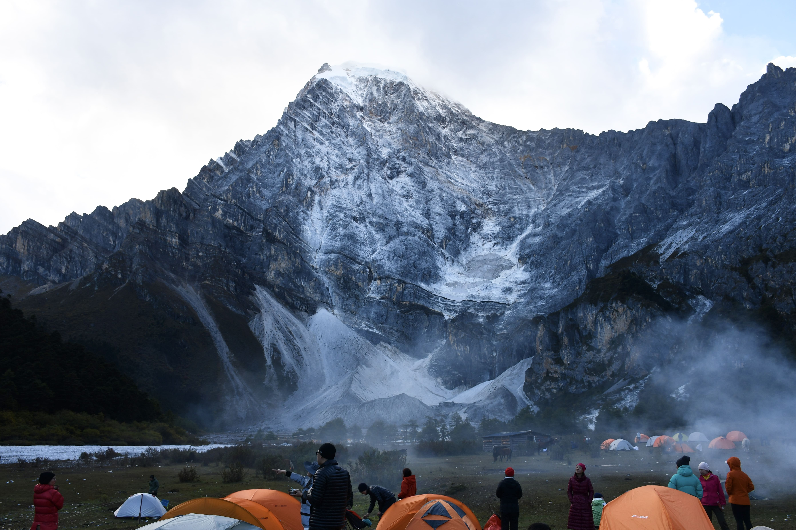

<div x-data="initData()" class="font-FTLC max-w-3xl sm:text-lg text-lg p-4 lg:px-2 md:mt-10 w-screen m-auto">
    <div x-data="{
        isMobile: window.innerWidth <= 640,
    }" class="flex flex-col items-center gap-4 md:gap-8 mb-10">
        <div class="flex justify-between w-full items-center mb-1">
            <h1 x-data class="font-fingerpaint text-3xl md:text-5xl">
                ADVENTURE
            </h1>
            <a x-data="homeIcon" href="/" class="w-8 h-8 inline-block"></a>
        </div>
        <div class="flex flex-col md:flex-row text-md md:text-lg items-end md:gap-2 mb-2">
            <div class="flex flex-col gap-3">
                <p
                    class="before:bg-quote mb-3 before:inline-block before:w-4 before:h-4 before:bg-no-repeat before:bg-center before:bg-contain">
                    The purpose of life is to live it, to taste experience to the utmost, to reach out eagerly and
                    without fear for
                    newer and richer experience. </p>
                
            </div>
            
        </div>

        <div class="text-md md:text-lg">
            Since I began working, I've finally had both the time and resources to broaden my experiences. Personally, I
            like to call each of my travels or hikes an "adventure", and I've recorded some of these experiences here. I
            wouldn't say I'm naturally adventurous, but I aspire to be.
        </div>

        <div class="md:mt-4 mt-1 flex flex-col gap-6" x-data="initAdventures()">
            <template x-for="adventure in adventures" :key="adventure.id">
                <div class="bg-[#FFF5DF] p-4 rounded-lg shadow-md">
                    <div class="flex flex-col font-fingerpaint justify-between gap-5 mb-6">
                        <a :href="adventure.url" target="_blank" class="text-2xl hover:underline underline-offset-3"
                            x-text="adventure.title"></a>
                        <div class="flex gap-4">
                            <div class="bg-[#725A48] px-2 w-24 text-center text-white">
                                altitude
                            </div>
                            <div class="text-sm">
                                <span x-text="adventure.altitude.avg"></span> avg,
                                <span x-text="adventure.altitude.max"></span> max
                            </div>
                        </div>
                        <div class="flex gap-4">
                            <div class="bg-[#725A48] w-24 text-center px-2 text-white">
                                period
                            </div>
                            <div class="text-sm">
                                <span x-text="adventure.period.start"></span> -
                                <span x-text="adventure.period.end"></span>
                            </div>
                        </div>
                    </div>
                    <div class="text-md md:text-lg flex flex-col gap-3 leading-[1.6]"
                        x-html="adventure.description.split('\n\n').map(p => `<div>${p.trim()}</div>`).join('')">
                    </div>
                    <div class="flex overflow-x-auto gap-2 snap-x snap-mandatory">
                        <template x-for="(img, index) in adventure.imgs" :key="index">
                            
                        </template>
                    </div>
                </div>
            </template>
        </div>
    </div>
</div>